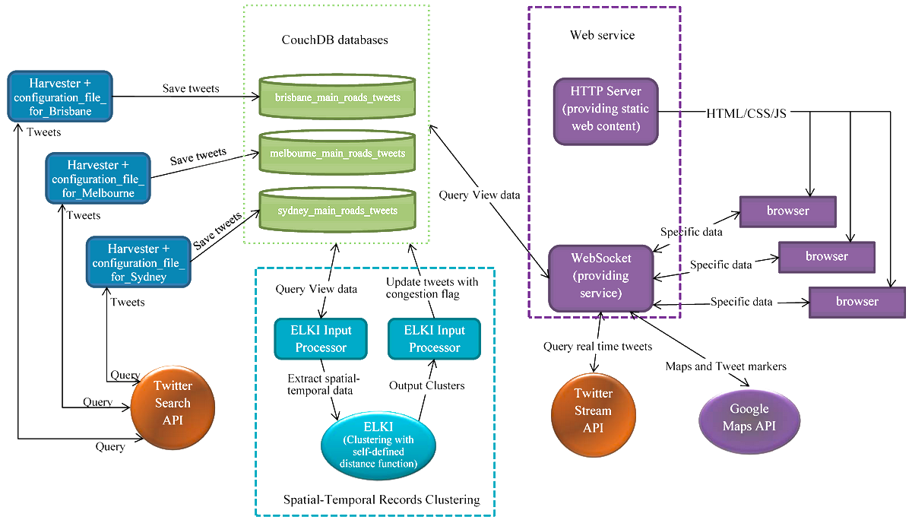

This is the web presentation of Distributed Computing Project, Semester 1 2015.
Project Title: Twitter at identifying real time transport congestion across different cities of Australia
Student & Email: Fengmin Deng dengf@student.unimelb.edu.au
Project Description
In this project, it is attempted to explore the relevance of tweeting on the roads to traffic congestion. The system is developed by firstly adopting the 'road block searching' algorithm devised by Yikai Gong to an implementation for any city. Secondly three instances in NeCTAR cloud are deployed to harvest main roads tweets from Brisbane, Melbourne and Sydney. Thirdly a visualization mapping is built to represent the clustering of tweets along the road.
Implementation Structure
Harvested Tweets from 21 April 2015 to 19 May 2015
Brisbane: 2,719
Melbourne: 14,616
Sydney: 19,351